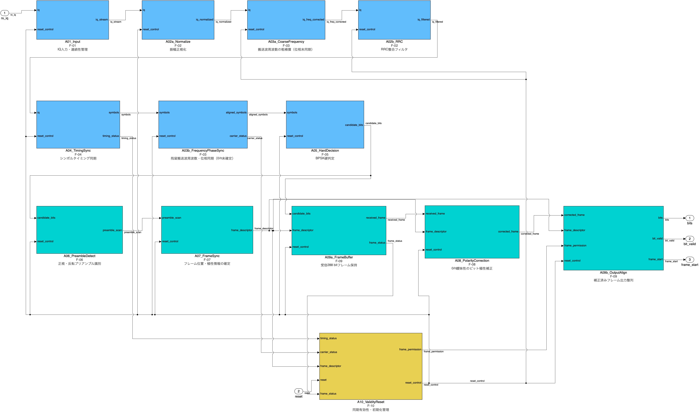

F-01 IQ入力・連続性管理
DDCのIQを受け取り、受信順序と連続した信号としての対応を維持する。
- 上位要求
- R-02;R-06
- 必要な入力情報
- 80 ksample/s複素IQ;外部reset
- 得られる情報
- 受信IQ;信号の順序・時間に関する情報
- 状態・reset
- 受信順序に必要な情報を維持する。reset前後の信号を混同しない。
- 検証観点
- 受信順序が保たれ、重複・欠落・reset前のデータ混入がないことを確認する。
v0.8 · 2026-11-22 · 機能・構成案A・インターフェース
本書は現在の設計内容を記載する。構成案の確定度・残課題・実装／検証状況は検討状況を参照。
上位仕様 v0.3を満たすために必要な能力をF-01〜F-10として定義する。機能の目的、必要な情報、成立させる振る舞い、検証観点を整理し、アルゴリズムの選定が必要な処理順序・機能配置・具体的な状態表現は決めない。
外部境界は、DDCからの80 ksample/s複素IQとresetを入力し、プリアンブルを含む極性補正済み10 kbit/sの硬判定列、bitValid、frameStartを出力する範囲。ADC・DDC・送信源・チャネル・真値を使う評価器・後段のデータ抽出は対象外。
| 要求 | 必要な能力 | 対応機能 |
|---|---|---|
| R-01 | フレーム形式に従った復調、プリアンブル識別、先頭位置と極性の把握。 | F-05、F-06、F-07、F-08、F-09、F-10 |
| R-02 | 受信IQから公称レートのbit列を得て、先頭・有効信号と整合させる。 | F-01、F-04、F-05、F-06、F-07、F-08、F-09、F-10 |
| R-03 | 未知の搬送波位相・シンボルタイミングと残留周波数ずれを扱う。 | F-03、F-04、F-10 |
| R-04 | 無雑音での正しい判定・極性解消・出力順序の維持。 | F-02、F-03、F-04、F-05、F-06、F-07、F-08、F-09 |
| R-05 | 波形整形、同期、判定、フレーム識別を含む雑音下の性能。 | F-02、F-03、F-04、F-05、F-06、F-07、F-08 |
| R-06 | 以前の状態を引き継がない再取得と、共通条件での実装間比較。 | F-01、F-02、F-03、F-04、F-06、F-07、F-09、F-10 |
R-04/R-05の数値条件は上位仕様の統合性能目標。R-06のMATLAB・Simulink比較は評価側の責務である。
導出した10機能を階層として示す。搬送波同期とシンボル同期は必要な能力として独立に示し、前後関係を付けない。有効性管理も横断的な責務を表し、中央の制御ブロックへの集約を指定しない。
以下は必要な情報の関係であり、直接の配線、単方向の処理、呼出順序を規定するものではない。
| 対象 | 必要な関係 |
|---|---|
| F-02・F-03・F-04とF-05 | 受信波形、搬送波ずれ、シンボル時刻を扱い、BPSK判定に必要な情報を成立させる。 |
| F-06とF-07 | 識別したプリアンブルと288 bit周期を、フレーム位置の根拠として用いる。 |
| F-06・F-07とF-08 | 極性の判断根拠と、その情報が対応するフレームを結び付ける。 |
| F-08・F-09 | 保持した受信データ、極性補正結果、出力するフレームを対応付ける。 |
| F-07・F-09 | 出力先頭をフレーム位置と対応付け、プリアンブルの最初のbitにframeStartを合わせる。 |
| F-10と各機能 | 出力有効性とreset後の再取得を整合させる。 |
正本は機能CSV。入力・出力欄は論理的に必要な情報を示し、ポートやデータ型を確定するものではない。「状態・reset」は必要な振る舞いを示し、内部変数や状態機械を指定しない。
DDCのIQを受け取り、受信順序と連続した信号としての対応を維持する。
送信RRCに対応した整合フィルタ処理により、判定に適した受信波形を得る。
残留周波数ずれと搬送波位相の影響を抑え、BPSK判定を可能にする。0/πの極性解消はF-08が担う。
未知のシンボル位相を扱い、公称10 ksymbol/sのシンボルに対応する判定対象を得る。
受信信号を送信側のBPSKビット割当てに対応する0/1の判定結果に変換する。極性曖昧性の解消は別責務とする。
既知32 bitプリアンブルの正規・反転パターンを識別し、フレーム位置と極性を判断する根拠を得る。
プリアンブル情報と288 bitのフレーム形式から、受信データのフレーム内位置を識別・維持する。
既知プリアンブルに基づき、対象フレームの受信bitの極性を送信側の割当てに合わせる。
プリアンブルを含む受信データを出力まで保持し、補正済みbit・有効信号・フレーム先頭信号を対応付けて出力する。
同期と極性の確定状況に応じた出力有効性、およびreset後の整合した再取得を成立させる。
任意のデータ部に同じプリアンブルが同じ周期で繰り返される場合、現フレーム情報だけでは真の先頭を一意に保証できない。ランダムデータでの性能と任意データに対する保証を区別する。追加フィールドは導入しない。
第3章の機能階層を具体的な処理へ割り当てた構成案Aを示す。方式に依存しない機能定義と、処理順序・方式・保持方針を持つ実現案を分けて記載する。
機能CSVを機能の正本、本章を構成案Aの割当ての正本とする。
| 位置 | 周波数ずれへの処理 | 搬送波位相への処理 |
|---|---|---|
| A-03a：シンボル同期前 | 搬送波の周波数ずれを粗く推定・補償する。 | 位相同期の完了は要求しない。 |
| A-04：タイミング同期 | 搬送波周波数の補償は担当しない。前段で低減した残留ずれの下で動作する。 | 搬送波位相の補償は担当しない。ここで合わせるのはシンボルの標本化時刻。 |
| A-03b：シンボル同期後 | 粗補償の残留周波数ずれを微細に追従・補償する。 | 搬送波位相を判定軸へ合わせる。ただし0/πの2通りは区別できない。 |
| A-06・A-07 → A-08：フレーム処理 | 周波数ずれは補償しない。 | プリアンブルから0/πに対応するビット極性を識別し、A-08で反転を補正する。搬送波ループへ位相補正を戻す構成にはしない。 |
本案の順序：搬送波周波数の粗補償 → シンボル時刻の同期 → 残留搬送波周波数と搬送波位相の同期 → 硬判定 → プリアンブルによる0/π曖昧性の解消。シンボル同期前に搬送波位相まで合わせる構成ではない。
| 処理／機能対応 | この案で置く方針 |
|---|---|
| A-01／F-01 | DDCから80 ksample/sの連続IQを受け、サンプル順序を維持する。 |
| A-02a／F-02の補助 | 同期器が扱いやすい振幅へ正規化する。独立の上位要求を追加するものではなく、本案の補助処理。 |
| A-03a／F-03 搬送波周波数の粗補償 |
対象は搬送波の周波数ずれ。搬送波位相の整合はここでは行わない。オーバーサンプリングIQの二乗に基づく粗周波数推定と回転補償を置く。初期取得時に推定し、追従中は値を保持して微細同期へ引き継ぐ。周波数補償に伴って信号を回転させても、未知の初期位相を確定したことにはならない。 |
| A-02b／F-02 | 送信RRCに対応する受信RRC、roll-off 0.35。ここでは間引かず80 ksample/sを維持する。 |
| A-04／F-04 | Gardner方式でタイミングを回復し、公称10 ksymbol/sの複素シンボルを出す。 |
| A-03b／F-03 残留周波数・搬送波位相同期 |
対象は粗補償後に残る搬送波周波数ずれと、搬送波位相の両方。シンボル同期後のシンボルレート信号にBPSKのCostas型ループを適用し、残留周波数を追従しながら位相を判定軸に合わせる。位相はπを法として整合し、0/πの曖昧性は残す。 |
| A-05／F-05 | 補償済みシンボルの実部の符号で硬判定する。正側を0、負側を1とする。 |
| A-06／F-06 | 硬判定列の32 bit窓で、正規・反転プリアンブルとの不一致数を評価する。 |
| A-07／F-07 | 取得時は288 bit間隔の2回の検出でフレーム位置を確認する。追従時は期待位置のプリアンブルを確認し、フレームごとに極性情報を付ける。 |
| A-09a／F-09 | 硬判定列を保持し、先頭が確定した288 bitを1フレームとして取り出す。取得確認に使った最初のフレームは出さず、2回目の検出位置から始まるフレームを最初の出力候補とする。 |
| A-08／F-08 | 受信した288 bitと、そのフレームに付けた反転要否で極性を補正する。プリアンブルを既知値で上書きしない。 |
| A-09b／F-09 | 完成した有効フレームをプリアンブル先頭から10 kbit/s相当で出力する。受信と送出を重ねるため、保持領域は少なくとも2フレーム相当を想定する。 |
| A-10／F-10 | 同期状態とフレーム状態を集約して有効性を管理する。resetで各処理と保持データを初期化する。 |
同期状態は、保持している対象フレームの受信時点に対応付けて記録する。外部resetでは送出中も無効化する。CRCがないため「有効」は同期・位置・極性の条件を満たした意味であり、全bitの無誤りを保証しない。
1フレームは28.8 ms。全フレーム保持は少なくともこの程度の待ちを追加し、起動時には信号同期と2回のプリアンブル確認も必要。
bpsk_demod_architecture.slx に構成案Aを表現した。13個の処理サブシステムと入出力端子・接続で構成し、各サブシステム内部は端子のみ。
青：信号処理、シアン：フレーム処理、黄：有効性・初期化管理。段ごとに処理を配置し、配線を再ルーティングした。内部の未接続端子は静的表現として意図したもの。モデル全体のシミュレーションやコンパイルの合格を意味しない。
信号線は論理情報を表す。候補bitやシンボルの有効性・位置情報、フレーム別の極性・許可情報を含む想定とし、論理型・フィールドは第10章を参照。Bus型をモデルに適用済み（第11章）。

構成案Aの各線を「データ本体＋付随情報」の論理レコードとして定義する。MATLAB参照実装はstruct、Simulink実装はBusなどへ対応付けられる形とするが、静的モデルへのBusオブジェクト・端子型の適用は第11章に記載する。
接続一覧CSVを正本とする。分岐する同一信号は1つのIF番号で管理する。
| ID | 送信元 → 受信先 | 信号／型 | 更新・有効性 |
|---|---|---|---|
| IF-01 | root/rx_iq → A01_Input/iq | rx_iq / complex double | 80 ksample/s。外部resetがfalseの間は連続入力。 |
| IF-02 | A01_Input/iq_stream → A02a_Normalize/iq | iq_stream / IqRecord | 80 ksample/s、valid時のみ消費。 |
| IF-03 | A02a_Normalize/iq_normalized → A03a_CoarseFrequency/iq | iq_normalized / IqRecord | 80 ksample/s、valid時のみ消費。 |
| IF-04 | A03a_CoarseFrequency/iq_freq_corrected → A02b_RRC/iq | iq_freq_corrected / IqRecord | 80 ksample/s、valid時のみ消費。 |
| IF-05 | A02b_RRC/iq_filtered → A04_TimingSync/iq | iq_filtered / IqRecord | 80 ksample/s、valid時のみ消費。 |
| IF-06 | A04_TimingSync/symbols → A03b_FrequencyPhaseSync/symbols | symbols / SymbolRecord | 公称10 ksymbol/s。validな候補ごとに更新。 |
| IF-07 | A03b_FrequencyPhaseSync/aligned_symbols → A05_HardDecision/symbols | aligned_symbols / SymbolRecord | IF-06の位置を保持。 |
| IF-08 | A05_HardDecision/candidate_bits → A06_PreambleDetect/candidate_bits;A09a_FrameBuffer/candidate_bits | candidate_bits / BitRecord | 公称10 kbit/s。validとsync_okを区別。 |
| IF-09 | A06_PreambleDetect/preamble_scan → A07_FrameSync/preamble_scan | preamble_scan / PreambleScan | 候補bitごと。未検出時もvalid=trueで進捗を通知。 |
| IF-10 | A07_FrameSync/frame_descriptor → A09a_FrameBuffer/frame_descriptor;A08_PolarityCorrection/frame_descriptor;A09b_OutputAlign/frame_descriptor;A10_ValidityReset/frame_descriptor | frame_descriptor / FrameDescriptor | フレーム判断イベント。位置・極性が揃うまでconfirmed=false。 |
| IF-11 | A09a_FrameBuffer/received_frame → A08_PolarityCorrection/received_frame | received_frame / ReceivedFrame | 完成フレームごと。未完成のbit配列は出さない。 |
| IF-12 | A08_PolarityCorrection/corrected_frame → A09b_OutputAlign/corrected_frame | corrected_frame / CorrectedFrame | 同一キーのReceivedFrameと有効なFrameDescriptorが揃ったとき。 |
| IF-13 | A04_TimingSync/timing_status → A10_ValidityReset/timing_status | timing_status / SyncStatus | 候補シンボルごとのタイミング同期状態。 |
| IF-14 | A03b_FrequencyPhaseSync/carrier_status → A10_ValidityReset/carrier_status | carrier_status / SyncStatus | 候補シンボルごとの搬送波同期状態。 |
| IF-15 | A10_ValidityReset/frame_permission → A09b_OutputAlign/frame_permission | frame_permission / FramePermission | 対象フレームの完了状態と記述子が揃ったときに判断。 |
| IF-16 | root/reset → A10_ValidityReset/reset | reset / boolean | true中は初期化保持。 |
| IF-17 | A10_ValidityReset/reset_control → A01_Input/reset_control;A02a_Normalize/reset_control;A03a_CoarseFrequency/reset_control;A02b_RRC/reset_control;A04_TimingSync/reset_control;A03b_FrequencyPhaseSync/reset_control;A05_HardDecision/reset_control;A06_PreambleDetect/reset_control;A07_FrameSync/reset_control;A09a_FrameBuffer/reset_control;A08_PolarityCorrection/reset_control;A09b_OutputAlign/reset_control | reset_control / ResetControl | 各処理のデータより先に適用する共通制御。 |
| IF-18 | A09b_OutputAlign/bits → root/bits | bits / uint8 | 公称10 kbit/s、bit_valid=true時のみ意味を持つ。 |
| IF-19 | A09b_OutputAlign/bit_valid → root/bit_valid | bit_valid / boolean | bitsと同時。同期・位置・極性が確定した対象フレームの送出時にtrue。 |
| IF-20 | A09b_OutputAlign/frame_start → root/frame_start | frame_start / boolean | bit_valid=trueかつフレームの最初のbitのみtrue。 |
| IF-21 | A09a_FrameBuffer/frame_status → A10_ValidityReset/frame_status | frame_status / FrameStatus | フレーム完了または取得失敗を確定したイベント。受信中の同期状態を集約。 |
フィールド一覧CSVと契約JSONに同じ定義を保存する。未使用・無効なフィールドの値は判定に使わない。
80 ksample/sのIQレコード。数値本体と位置・過渡有効性を一体で扱う。
| フィールド | 型／形状 | 意味 |
|---|---|---|
| valid | boolean / scalar | 新しいレコードがある場合true。false時は他フィールドを消費しない。 |
| epoch | uint64 / scalar | 初期化区間のID。異なるepochのデータ・制御を結合しない。 |
| sample_index | uint64 / scalar | A-01が付与する0始まり入力サンプル位置。80 ksample/s処理間で維持。 |
| value | complex double / scalar | 受信または処理後IQ。 |
| usable | boolean / scalar | 過渡区間等を除き後続の同期判定に利用可能か。 |
A-04以降のシンボルレコード。処理で値が変わっても位置を保つ。
| フィールド | 型／形状 | 意味 |
|---|---|---|
| valid | boolean / scalar | 新しいレコードがある場合true。false時は他フィールドを消費しない。 |
| epoch | uint64 / scalar | 初期化区間のID。異なるepochのデータ・制御を結合しない。 |
| symbol_index | uint64 / scalar | A-04が候補シンボル生成順に0から付与。同期未確立でも生成した候補は数える。 |
| value | complex double / scalar | 抽出または搬送波補償後のシンボル。 |
| timing_locked | boolean / scalar | 当該シンボルに対応するタイミング同期状態。入力usableも加味する。 |
| carrier_locked | boolean / scalar | 当該シンボルの搬送波同期状態。A-04ではfalse、A-03bが設定。 |
硬判定候補。転送有効と同期成立を区別する。
| フィールド | 型／形状 | 意味 |
|---|---|---|
| valid | boolean / scalar | 新しいレコードがある場合true。false時は他フィールドを消費しない。 |
| epoch | uint64 / scalar | 初期化区間のID。異なるepochのデータ・制御を結合しない。 |
| bit_index | uint64 / scalar | 対応するsymbol_indexをそのまま継承。候補bitの0始まり位置。 |
| value | uint8 / scalar | |
| sync_ok | boolean / scalar | 当該シンボルのtiming_locked AND carrier_locked。falseでもvalidな候補は位置を進める。 |
検出の有無に関係なく、各候補bitで進捗を通知する。
| フィールド | 型／形状 | 意味 |
|---|---|---|
| valid | boolean / scalar | 新しいレコードがある場合true。false時は他フィールドを消費しない。 |
| epoch | uint64 / scalar | 初期化区間のID。異なるepochのデータ・制御を結合しない。 |
| bit_index | uint64 / scalar | 照合窓末尾の候補bit位置。未検出時も通知し、A-07が期待位置を通過したことを認識できる。 |
| window_ready | boolean / scalar | 連続した32 bitの窓が揃ったか。 |
| match_found | boolean / scalar | 正規または反転パターンの候補として採用可能か。 |
| start_bit | uint64 / scalar | window_ready時のみ有効。bit_index-31。 |
| invert | boolean / scalar | match_found時のみ有効。trueなら全bit反転候補。 |
| errors_normal | uint8 / scalar | window_ready時の正規プリアンブルとの不一致数0〜32。 |
| errors_inverted | uint8 / scalar | window_ready時の反転プリアンブルとの不一致数0〜32。 |
| window_sync_ok | boolean / scalar | 照合対象32 bitすべてでsync_okがtrueか。 |
フレーム先頭・極性・同期確定情報。対象フレームを明示する。
| フィールド | 型／形状 | 意味 |
|---|---|---|
| valid | boolean / scalar | 新しいレコードがある場合true。false時は他フィールドを消費しない。 |
| epoch | uint64 / scalar | 初期化区間のID。異なるepochのデータ・制御を結合しない。 |
| start_bit | uint64 / scalar | 対象フレームのプリアンブル先頭bit位置。epochと合わせてフレームキーとする。 |
| confirmed | boolean / scalar | 未検出等ではfalse。 |
| polarity_valid | boolean / scalar | invertが有効な極性判断か。 |
| invert | boolean / scalar | trueなら対象288 bitを反転。polarity_valid=falseのとき解釈しない。 |
受信した288 bitの完成フレーム。プリアンブルの受信値を保持する。
| フィールド | 型／形状 | 意味 |
|---|---|---|
| valid | boolean / scalar | 新しいレコードがある場合true。false時は他フィールドを消費しない。 |
| epoch | uint64 / scalar | 初期化区間のID。異なるepochのデータ・制御を結合しない。 |
| start_bit | uint64 / scalar | 保持フレームの先頭。 |
| bits | uint8 / [288,1] | 受信順の0/1。先頭32要素がプリアンブル、残り256要素がデータ。 |
| sync_ok_all | boolean / scalar | 対象288 bitのsync_okの論理積。現在のロック状態で代用しない。 |
A-09aからA-10へのフレーム単位の受信結果。
| フィールド | 型／形状 | 意味 |
|---|---|---|
| valid | boolean / scalar | 新しいレコードがある場合true。false時は他フィールドを消費しない。 |
| epoch | uint64 / scalar | 初期化区間のID。異なるepochのデータ・制御を結合しない。 |
| start_bit | uint64 / scalar | 評価対象の先頭。 |
| complete | boolean / scalar | 288 bitが欠落・重複なく揃ったか。 |
| sync_ok_all | boolean / scalar | completeなフレームの全bitで同期成立していたか。complete=false時はfalse。 |
対象フレームの極性補正済みレコード。
| フィールド | 型／形状 | 意味 |
|---|---|---|
| valid | boolean / scalar | 新しいレコードがある場合true。false時は他フィールドを消費しない。 |
| epoch | uint64 / scalar | 初期化区間のID。異なるepochのデータ・制御を結合しない。 |
| start_bit | uint64 / scalar | 元の受信フレームと同じ先頭。 |
| bits | uint8 / [288,1] | 極性補正済み0/1。受信プリアンブルも同じ規則で補正し置換しない。 |
| sync_ok_all | boolean / scalar | ReceivedFrameから継承する。 |
| inverted | boolean / scalar | 実際に全bit反転を適用したか。 |
同期品質の判定結果を候補シンボル位置とともに通知する。生の誤差信号は本契約に含めない。
| フィールド | 型／形状 | 意味 |
|---|---|---|
| valid | boolean / scalar | 新しいレコードがある場合true。false時は他フィールドを消費しない。 |
| epoch | uint64 / scalar | 初期化区間のID。異なるepochのデータ・制御を結合しない。 |
| symbol_index | uint64 / scalar | この同期判定が対応する候補シンボル位置。 |
| locked | boolean / scalar | タイミングまたは搬送波の同期成立判定。 |
現在時刻の単一ロックflagではなく対象フレーム別の出力判断。
| フィールド | 型／形状 | 意味 |
|---|---|---|
| valid | boolean / scalar | 新しいレコードがある場合true。false時は他フィールドを消費しない。 |
| epoch | uint64 / scalar | 初期化区間のID。異なるepochのデータ・制御を結合しない。 |
| start_bit | uint64 / scalar | 出力判断対象の先頭。 |
| allow | boolean / scalar | trueなら当該完成フレームの送出を許可。falseなら当該フレームは破棄。 |
A-10から全処理へ渡す初期化要求とepoch。
| フィールド | 型／形状 | 意味 |
|---|---|---|
| reset | boolean / scalar | trueの間は保持状態・出力有効を初期化し新規データを消費しない。 |
| epoch | uint64 / scalar | 実行開始は0。新しい初期化区間で更新し、同じreset保持期間中は変えない。 |
config/bpsk_demod_interfaces.slddに11種類・58フィールドのSimulink.Bus / BusElementを保存し、静的モデルの各Inport / Outportから型を参照する。型・次元・実数／複素数と説明を収録する。
MATLAB Projectを開き、open('bpsk_demod_interfaces.sldd')で辞書を表示する。Design Dataで型を選び、各要素のDescriptionを参照する。モデル端子のデータ型にはBus: ReceivedFrame等を設定している。SLXとSLDDをセットで管理する。
フィールド一覧CSVを正本とし、build_bpsk_interfacesで辞書を再生成する。既存の同名型は更新されるため、辞書だけを手修正しない。端子への型割当てを変更する場合はインターフェース一覧CSVとモデルを合わせて更新し、check_bpsk_interfacesで整合を確認する。
sample / bit等の意味上の単位はDescriptionに保存する。物理単位Unitや実行サンプル時間として解釈しない。valid・epoch・フレーム対応付けの動作は説明上の契約であり、型定義だけで強制・検証されない。
CSV・辞書・端子設定の静的整合と接続を確認する。